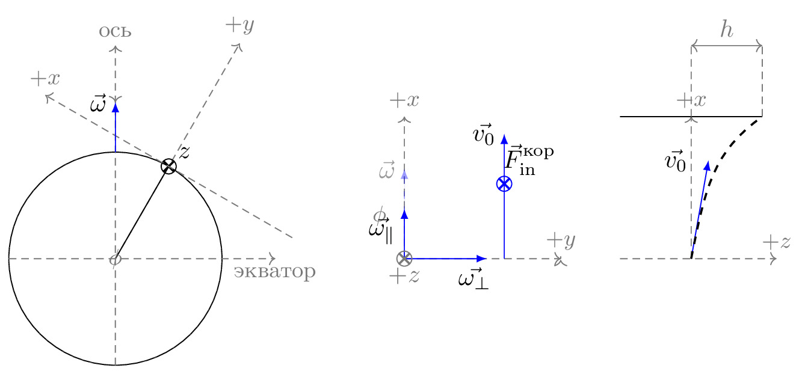

pre.tex
\documentclass[tikz]{standalone}\input{pre.tex}\begin{document}\begin{tikzpicture}[
axis/.style={densely dashed,black!60,font=\small},
force/.style={>=latex,draw=blue,fill=blue},
% m/.style={rectangle,draw,fill=lightgray,minimum size=0.5cm,thin},
m/.style={draw=black!30, rectangle,draw,thin, fill=blue!2, minimum size=0.5cm},
m/.style={draw=black!30, rectangle,draw,thin, fill=blue!2, minimum size=0.5cm},
interface/.style={draw=gray!60,
postaction={draw=gray!60,decorate,decoration={border,angle=-135,
amplitude=0.3cm,segment length=2mm}}},
plane/.style={draw=black!30, very thick, fill=blue!5},
string/.style={draw=black, thick},
pulley/.style={thick},
]
\matrix[column sep=0.5cm] {
\begin{scope}[]
\xdef\r{1.5cm}
\xdef\rp{3pt}
\node [shape=circle,draw] (c) at (0,0) [minimum size=\r*2] {};
\draw [axis, ->] (0,0) -- (60:\r+2cm) node[anchor=south] {$+y$};
\draw (0,0) -- (60:\r) circle (\rp) node[below, pos=1.3] {$z$};
\draw [thick] (60:\r) +(-135:\rp)--+(45:\rp);
\draw [thick] (60:\r) +(135:\rp)--+(-45:\rp);
\draw [axis, ->] ($(60:\r)!2cm!90:(0,0)$) --($(60:\r)!2cm!270:(0,0)$) node[anchor=south] {$+x$};
\draw [axis, ->] (0,-\r) -- (0,2*\r) node[anchor=south] {ось};
\draw [axis, ->] (-\r,0) -- (1.5*\r,0) node[below] {экватор};
\draw [force, ->] (0,\r) -- (0,\r+2em) node[left] {$\vec{\omega}$};
{[axis,<-]
\draw[solid,shorten >=0.5pt] (\iangle:\arcr) arc(\iangle:0:\arcr);
\node at (0.5*\iangle:1.4*\arcr) {$\phi$};
}
\end{scope}
&
\begin{scope}[rotate=\iangle]
{[axis,->]
\draw (0,0) -- (0,2) node[anchor=south] {$+x$};
\draw (0,0) -- ++(2.2,0) node[above] {$+y$};
% Indicate angle. The code is a bit awkward.
\draw[solid,shorten >=0.5pt, ] (90:\arcr)
arc(90:90-\iangle:\arcr);
\node at (120-\iangle:0.7cm) {$\phi$};
}
% Forces
{[force,->]
% Assuming that Mg = 1. The normal force will therefore be cos(alpha)
\draw [opacity=1] (0,0) -- (0,2em) node[anchor=north east] {$\vec{\omega_\parallel}$};
% \draw (m.center) -- ++(0,{cos(\iangle)}) node[above right] {$\vec{N}$};
% \draw (m.south) -- ++(-1,0) node[below, pos=1] {$\vec{f}_R$};
% \draw (m.east) -- ++(1,0) node[above] {$T$};
}
{[force]
\draw (4em, 3em) circle (\rp);
\draw [thick] (4em,3em) +(-135:\rp)--+(45:\rp);
\draw [thick] (4em,3em) +(135:\rp)--+(-45:\rp);
\node [above, xshift=1em] at (4em,3em) {$\vec{F}^\text{кор}_\text{in}$};
\draw [->] (4em,0) -- (4em,5em) node [left] {$\vec{v_0}$};
\draw [->] (0,0) -- (3.3em,0) node [below, pos=0.7, xshift=0.5em] {$\vec{\omega_\perp}$};
}
\end{scope}
\draw [force, dashed, ->, opacity=0.4](0,0) -- (0, 3.6em) node[left] {$\vec{\omega}$};
{[black!60]
\draw (0,0) circle (\rp) node[below, pos=1.3] {$+z$};
\draw [thick] (0,0) +(-135:\rp)--+(45:\rp);
\draw [thick] (0,0) +(135:\rp)--+(-45:\rp);s
}
% \draw[force,double equal sign distance=2pt,->] (m.center) -- ++(1,0) node[below, pos=1.5] {$\FIN$};
% Draw gravity force. The code is put outside the rotated
% scope for simplicity. No need to do any angle calculations.
% \draw[force,->] (m.center) -- ++(0,-1) node[below] {$m\vec{g}$};
&\begin{scope}[]
{[axis,->]
\draw (0,0) -- (0,2) node[anchor=south] {$+x$};
\draw (-1,0) -- ++(2.2,0) node[above] {$+z$};
% Indicate angle. The code is a bit awkward.
% \draw[solid,shorten >=0.5pt, ] (45:\arcr)
% arc(45:90:\arcr);
% \node at (67:0.7cm) {$\alpha$};
% \draw [-] (0,0) --(45:2);
}
{[force,->]
\draw (0,0) --(80:4em) node [left, xshift=-0.5em] {$\vec{v_0}$};
}
\draw (-1,2) -- (1,2);
\draw[axis] (0,2)--(0,3);
\draw[axis] (1,2)--(1,3);
\draw[black!60,<->] (0,3)--node[above] {$h$} (1,3);
\draw[dashed, black, thick] (0,0) .. controls (0.2,1) and (0.3,1.5) .. (1,2);
\end{scope}
% \node[draw=none,text width=3cm, line width=0mm] at (0,0.5) {
% Возьмем НИСО, связанную с бруском.
% \begin{gather}
% \nonumber \FIN=-m\vec{a}_0\\
% \nonumber \vec{N}=-\vec{P}\\
% \nonumber N_y={}mg\cos\alpha-ma_{0x}\sin\alpha\\
% \nonumber f_{Rx}=\\
% \nonumber = -\mu{}m(g\cos\alpha-a_{0x}\sin\alpha)
% \end{gather}
% };
\\
};
\end{tikzpicture}\end{document}